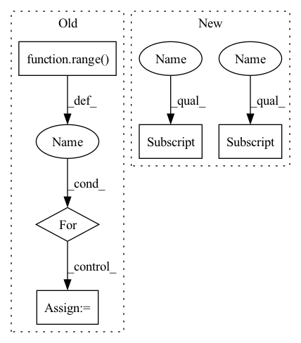

Pattern ID :2304
Before Change
loss = 0.
for idx in range( num_joints):
heatmap_pred = heatmaps_pred[idx].squeeze(1)
heatmap_gt = heatmaps_gt[idx].squeeze(1)
target_weight = target_weights[:, idx, None]
if self.use_target_weight:
loss += self.criterion(heatmap_pred * target_weight,After Change
Tensor: The calculated loss.
if self.use_target_weight:
loss = self.criterion(output * target_weights[..., None, None] ,
target * target_weights[..., None, None] )
else:
loss = self.criterion(output, target)
In pattern: SUPERPATTERN
Frequency: 3
Non-data size: 5
Instances Fragment ID: 14305096
Project Name: open-mmlab/mmpose
Commit Name: 23954dab675977d9762e61680a0b4a02ee2479f9
Time: 2022-08-02
Author: 87690686+liqikai9@users.noreply.github.com
File Name: mmpose/models/losses/mse_loss.py
M Class Name: KeypointMSELoss
N Class Name: KeypointMSELoss
M Method Name: forward(4)
N Method Name: forward(4)
M Parent Class: nn.Module
N Parent Class: nn.Module
M File Name: mmpose/models/losses/mse_loss.py
N File Name: mmpose/models/losses/mse_loss.py
M Start Line: 24
M End Line: 45
N Start Line: 28
N End Line: 53
Before Change
laterals.append(self.psp_forward(inputs))
used_backbone_levels = len(laterals)
for i in range( used_backbone_levels-1, 0, -1):
laterals[i-1] += F.interpolate(laterals[i], size=laterals[i-1].shape[2:], mode="bilinear", align_corners=False)
fpn_outs = [self.fpn_convs[i](laterals[i]) for i in range(used_backbone_levels-1)]
fpn_outs.append(laterals[-1])After Change
def forward(self, features: Tuple[Tensor, Tensor, Tensor, Tensor]) -> Tensor:
f = self.ppm(features[-1] )
fpn_features = [f]
for i in reversed(range(len(features)-1)):
feature = self.fpn_in[i](features[i] )
f = feature + F.interpolate(f, size=feature.shape[-2:], mode="bilinear", align_corners=False)
fpn_features.append(self.fpn_out[i](f))
Fragment ID: 14305087
Project Name: sithu31296/semantic-segmentation
Commit Name: af9bcfd5c4642c42b0fa9e1b2af46eb45ec9063d
Time: 2021-08-27
Author: sithu31296@gmail.com
File Name: models/heads/upernet.py
M Class Name: UPerHead
N Class Name: UPerHead
M Method Name: forward(2)
N Method Name: forward(2)
M Parent Class: nn.Module
N Parent Class: nn.Module
M File Name: models/heads/upernet.py
N File Name: models/heads/upernet.py
M Start Line: 53
M End Line: 63
N Start Line: 44
N End Line: 53
Before Change
else:
raise ValueError("This similarity is not implemented.")
loss = list()
for i in range( batch_size):
pos_index = labels == labels[i]
pos_index[i] = 0
neg_index = labels != labels[i]
pos_pair_ = sim_mat[i][pos_index]
neg_pair_ = sim_mat[i][neg_index]
After Change
else:
raise ValueError("This similarity is not implemented.")
pos_pair_ = sim_mat[pos_mask == 1]
neg_pair_ = sim_mat[neg_mask == 1]
alpha_p = torch.relu(-pos_pair_ + 1 + self.margin)
alpha_n = torch.relu(neg_pair_ + self.margin)
Fragment ID: 14305090
Project Name: qianjinhao/circle-loss
Commit Name: 55a6035c552f781d6c761475f88b33b8f684fbe7
Time: 2020-04-02
Author: qianjinhao@126.com
File Name: circle_loss.py
M Class Name: CircleLoss
N Class Name: CircleLoss
M Method Name: forward(3)
N Method Name: forward(3)
M Parent Class: nn.Module
N Parent Class: nn.Module
M File Name: circle_loss.py
N File Name: circle_loss.py
M Start Line: 16
M End Line: 40
N Start Line: 17
N End Line: 38
Before Change
loss = 0.
for idx in range( num_joints):
heatmap_pred = heatmaps_pred[idx].squeeze(1)
heatmap_gt = heatmaps_gt[idx].squeeze(1)
target_weight = target_weights[:, idx, None]
if self.use_target_weight:
loss += self.criterion(heatmap_pred * target_weight,
heatmap_gt * target_weight)
else:
loss += self.criterion(heatmap_pred, heatmap_gt)
return loss / num_joints * self.loss_weight
After Change
Tensor: The calculated loss.
if self.use_target_weight:
loss = self.criterion(output * target_weights[..., None, None] ,
target * target_weights[..., None, None] )
else:
loss = self.criterion(output, target)
Fragment ID: 14305091
Project Name: open-mmlab/mmpose
Commit Name: 23954dab675977d9762e61680a0b4a02ee2479f9
Time: 2022-08-02
Author: 87690686+liqikai9@users.noreply.github.com
File Name: mmpose/models/losses/mse_loss.py
M Class Name: KeypointMSELoss
N Class Name: KeypointMSELoss
M Method Name: forward(4)
N Method Name: forward(4)
M Parent Class: nn.Module
N Parent Class: nn.Module
M File Name: mmpose/models/losses/mse_loss.py
N File Name: mmpose/models/losses/mse_loss.py
M Start Line: 24
M End Line: 45
N Start Line: 28
N End Line: 53